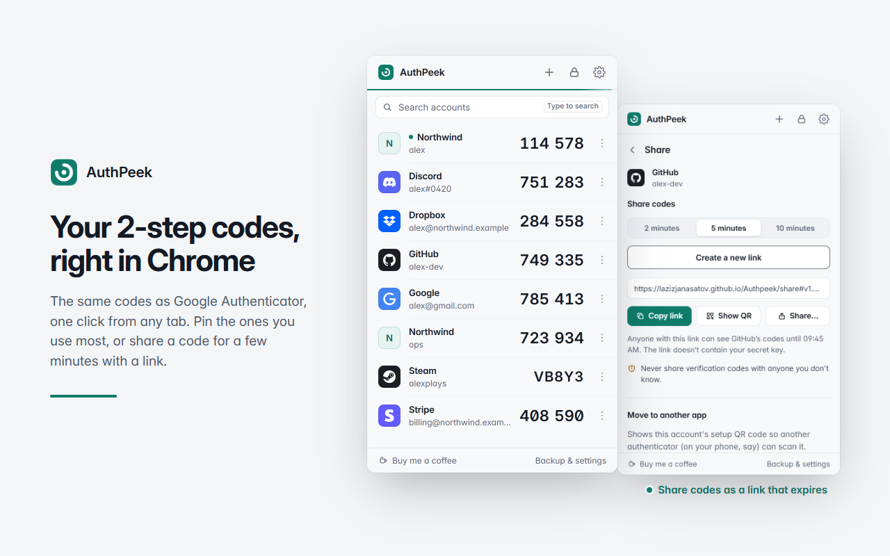
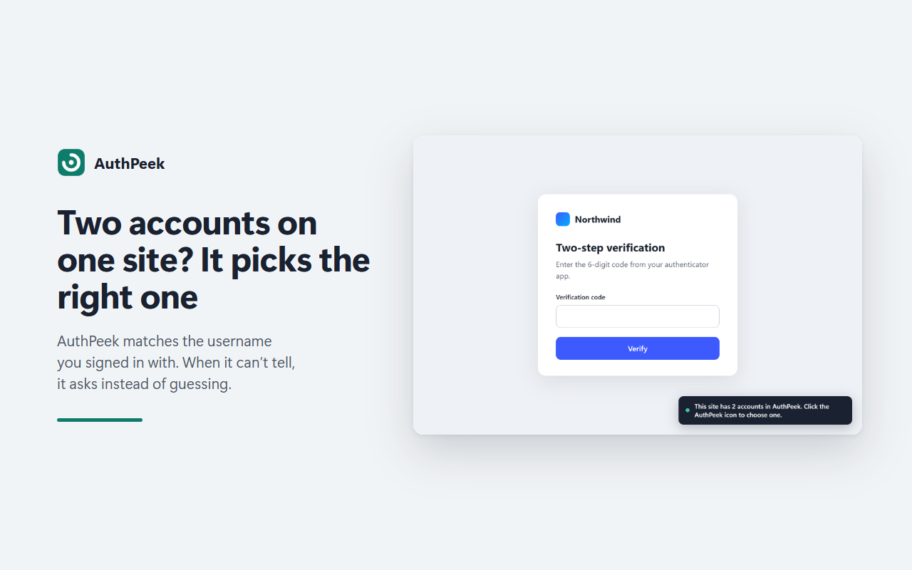
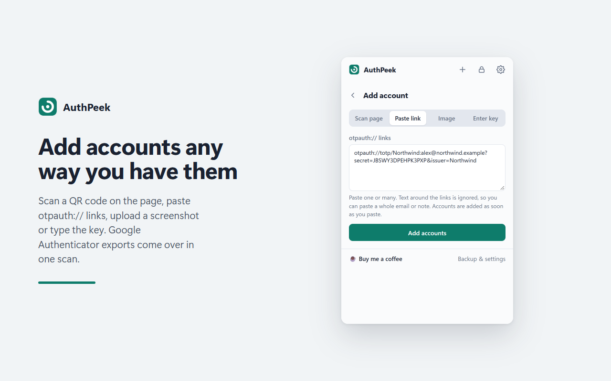
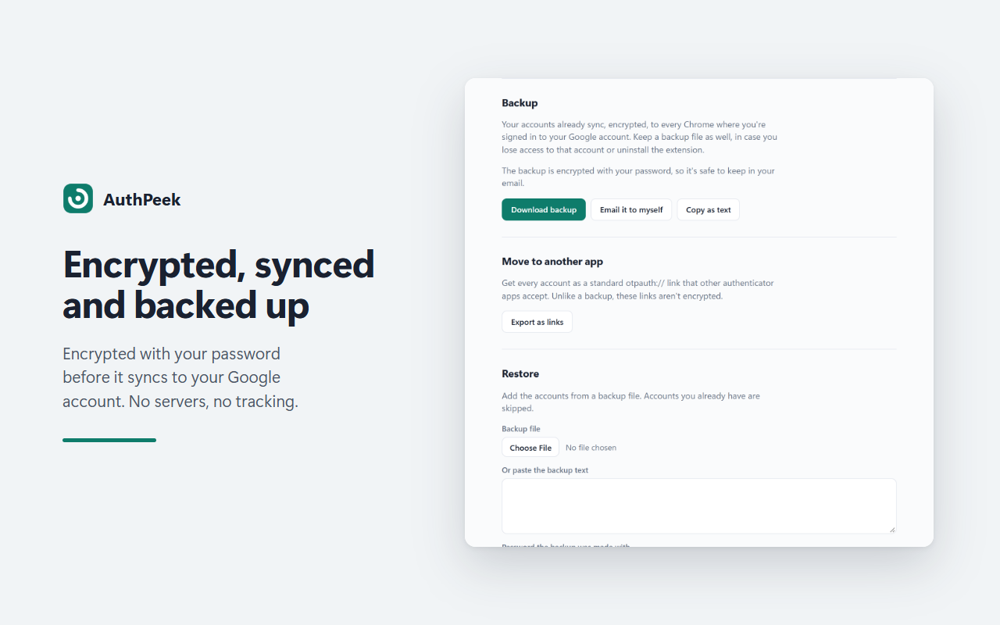

2-step verification codes in Chrome that fill themselves in.
An authenticator that lives in your browser: the same 6-digit codes as Google Authenticator, filled into login pages for you. Encrypted with your password, synced with your Google account, no servers.

Why
Every 2-step login goes the same way: find your phone, unlock it, open the authenticator, scroll to the right account, read six digits, type them before the timer runs out. AuthPeek does that last part for you. You link an account to a site once, and from then on the code is in the box before you'd have found your phone.
What it does



otpauth:// links, upload a screenshot, or type the key. Google Authenticator's Transfer accounts QR codes bring everything over at once.
Also: right-click any text box and choose AuthPeek to fill a code yourself, press Alt+Shift+O on a login page, Steam Guard codes, a clock check that fixes codes when your computer's clock is off, and export to standard otpauth:// links whenever you want to move on.
Install
Chrome Web Store: in review; the link will be here once it's live.
From source, today:
- Download the repository and unzip it.
- Open
chrome://extensionsand switch on Developer mode (top right). - Click Load unpacked and choose the
extensionfolder. - Pin AuthPeek from the puzzle-piece menu, click it, and create your password.
Moving from Google Authenticator: in the app, choose Transfer accounts → Export, then in AuthPeek click + → Scan page (or upload a screenshot of the QR code).
How it keeps your codes safe
- Encrypted before it's saved. Each account is encrypted with AES-256-GCM using a key derived from your password (PBKDF2-SHA256, 600,000 rounds). Your password is never stored. Chrome sync carries only the encrypted data, so Google can't read it.
- No servers. Nothing is sent to the developer or anyone else. The one network request is an optional clock check against Cloudflare's public time service.
- No look-alike fills. A code is only filled on the exact site you linked (or its subdomains), so a phishing page at a similar address gets nothing.
- Open source. Everything above can be checked in the code.